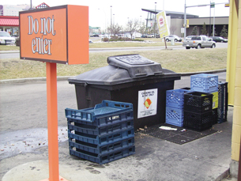

Module 2—Talking Energy
 Lesson 1 Lab: Biodiesel
Lesson 1 Lab: Biodiesel
Introduction

One of the ways to evaluate biodiesel as a fuel is to prepare some biodiesel and then test it. Biodiesel can be prepared from any vegetable oil or animal fat. A popular choice of oil is waste vegetable oil used in food preparation. In this investigation you will make biodiesel from olive oil.
This lab is in two parts. You will prepare and test biodiesel against the materials used in its preparation to compare their qualitative aspects of combustion. You will also perform an experiment to determine the biodiesel's energy content.
 Retrieve your copy of the Module 2: Lesson 1 Assignment that you saved
to your computer earlier in this lesson. You will record data and
complete your analysis in your Lesson 1 Assignment.
Retrieve your copy of the Module 2: Lesson 1 Assignment that you saved
to your computer earlier in this lesson. You will record data and
complete your analysis in your Lesson 1 Assignment.
Background Information
Previous science courses probably taught you that molecules store chemical potential energy, which can be released when chemical bonds in matter are broken and new bonds are formed. Maybe you’ve even completed an experiment to determine the energy in a sample of food or fuel. Whether oil is crude or plant-based—peanut oil, palm oil, olive oil, or canola oil—it has molecules that are often described as “energy rich.”
Rudolf Diesel, the inventor of the diesel engine, demonstrated in 1900
at the World’s Fair in Paris that an engine could run on peanut oil
rather than on petroleum-based fuels.
Considering the current concern over the depletion of crude oil
reserves and the growing demand for energy, Diesel was quite a
visionary when he mentioned, in 1912, that
Even though the use of vegetable oils for engine fuels may seem insignificant today, such oils may become in the course of time as important as the petroleum and coal tar products of the present time.
Diesel’s insight about the potential of plant-based oils as an energy
source is being demonstrated by people using waste vegetable oil from
restaurants as a fuel in their vehicles powered by diesel engines.
Around the world, some governments and some corporations within the
energy industry are promoting the production of biodiesel, the fuel
produced by the modification of vegetable oils.
The yearly consumption of diesel fuel in North America is 245.5 billion
litres, most of it for transportation of goods and people. The
production and sale of blended diesel fuels, which contain a percentage
of biodiesel (e.g., 20% in the case of biodiesel B-20), mixed with
petroleum-based diesel fuel, is a growing industry in Europe, where
sources of petroleum-diesel are limited. Concerns about depleting
petroleum sources elsewhere in the world, including North America, have
forced governments and the oil industry to consider biodiesel as a
means to offset some of the demand for petroleum-diesel.
In this project, you will investigate the production and use of
biodiesel, focusing on the chemistry of its production, the
practicality of its use at low temperatures, the energy changes
associated with its use, and the sustainability of this energy source.
Performing the Lab
Complete the following two investigations:
 You most likely will not have access to all materials and a
supervised laboratory, therefore you will view the following two virtual investigations in order to complete the lab:
You most likely will not have access to all materials and a
supervised laboratory, therefore you will view the following two virtual investigations in order to complete the lab:
Remember to record data and observations in your Assignment Booklet as you view the presentations.